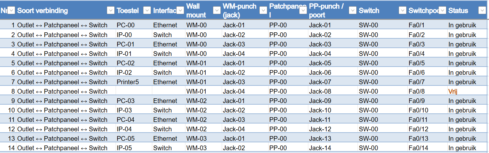
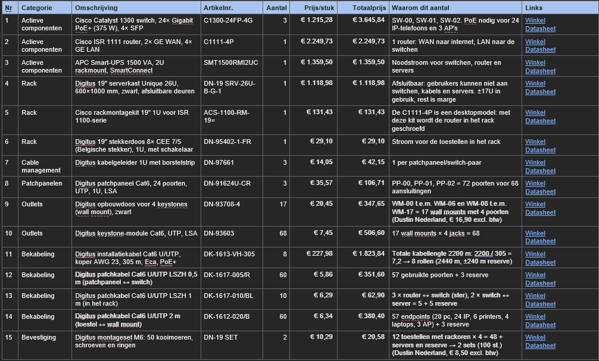
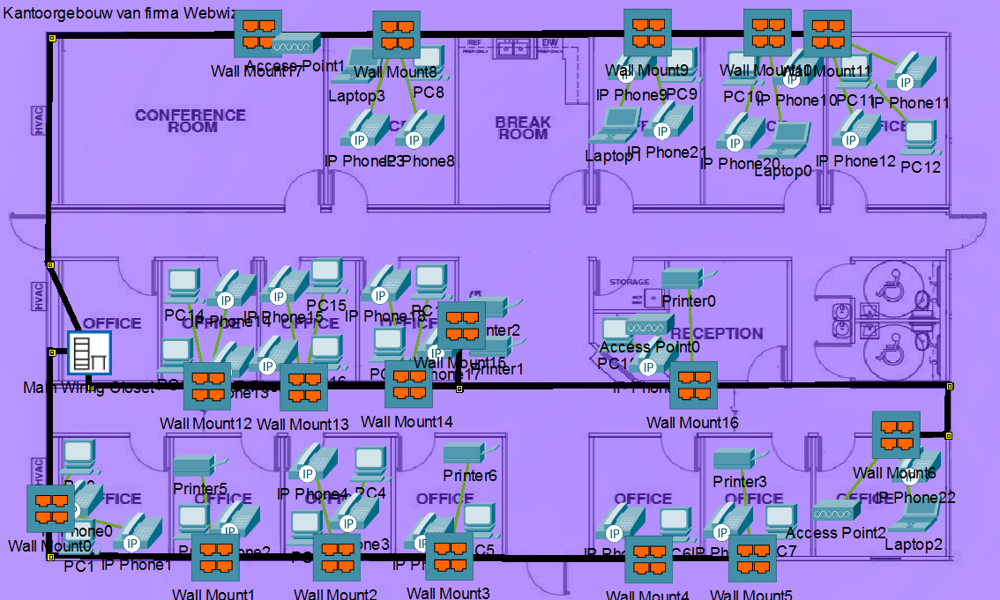

Webwiz
In deze opdracht tekende we het netwerk uit voor een klein groeiend bedrijf. compleet met bekabelingsplan, aankooplijst, rack layout en Patch plan. Dit was een groepswerk die ik samen met mijn medestudent Nikita Petrov maakte. Met een resultaat van 17/20 mag ik wel trots zijn op het geleverde werk.
Afbeeldingen


